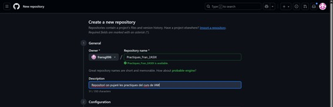
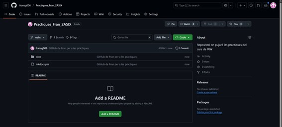
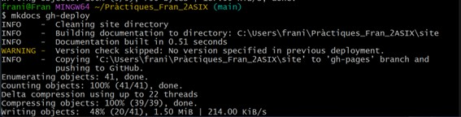

PR06 - Desplegament en GitHub Pages
Pràctica de desplegament de GitHub Pages
La pagina va modificant-se segons els estils aplicats i modificacions de les practiques, ja que la informació que hi ha en aquesta pràctica es simplement la base del projecte, on s'anirán fent canvis
Organitza la documentació de les teues pràctiques.
Tinc totes les practiques passades a un mateix fitxer MarkDown, per a després amb un copia-pega poder crear els fitxers del projecte.
Aquesta documentació serà un projecte de mkdocs.
Els passos per a crear el projecte son els següents.


Editant el fitxer index.md, es pot afegir la informació markdown de les practiques, de primer per a començar es pot veure lo de la següent imatge.


D’aquesta manera la pagina es pot veure però el terminal bash es queda bloquejat, i al aturar-lo, la pagina ja no es troba disponible, per tant, vaig a crear un repositori nou a GitHub per a que no passe això.



Utilitza un tema que t'agrade per a la visualització del teu lloc.
Per a escollir un tema, al fitxer .yml, afegim la línia següent, amb el tema que he desitjat.


I així es veuria amb el tema aplicat (per a canviar-lo, simplement s’edita el fitxer anterior, seguit del comandament que hi ha abans).

Desplega el teu lloc en Github Pages.
Amb aquest comandament, usat anteriorment, despleguem el lloc a GitHub Pages.
També s'usa per a aplicar canvis nous.

L’enllaç al meu GitHub Pages es troba ací: Pages